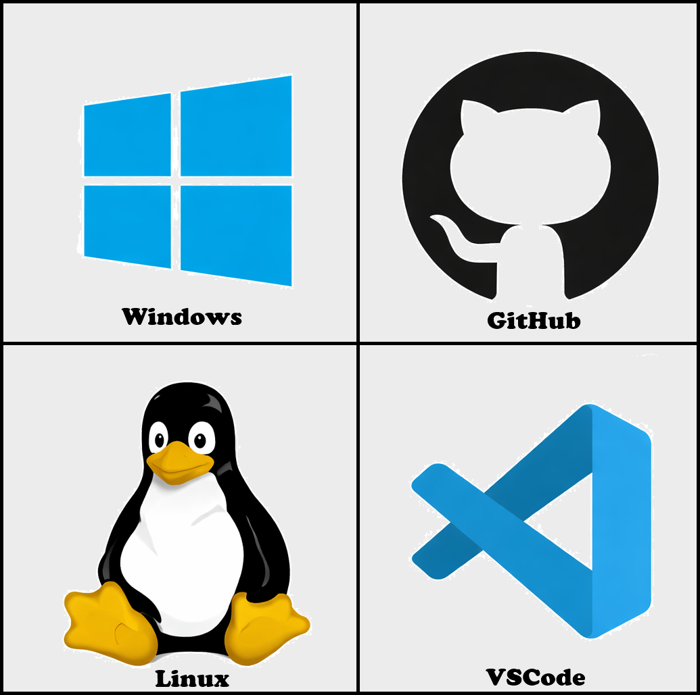

Compétences



Étudiant en deuxieme année de BUT info
Moi, c'est Gabriel Trichard, j'ai actuellement 19 ans et je suis originaire d'Arras.
J'ai effectué un bac général avec spécialité Math, NSI (Sciences du numérique et de l'informatique) et SI (Sciences de l'ingénieur) au lycée Gambetta-Carnot à Arras.
Après avoir obtenu mon bac avec mention assez bien en 2024, j'ai intégré le BUT Informatique de Lille. Durant cette année, j'ai découvert de nombreuses facettes de l'informatique qui m'ont majoritairement plu.
Une fois cette année terminée, j'ai décidé de me réorienter vers un BTS SIO (Services Informatiques aux Organisations).
Je suis donc aujourd'hui en BTS SIO option SLAM (Solutions Logicielles et Applications Métiers) au lycée Guy Mollet à Arras.
Grâce à ma première année de BUT informatique et à ce BTS, j'approfondis de jour en jour mes connaissances en développement, en gestion de bases de données et en cybersécurité. J'enrichis également mes compétences interpersonnelles à l'aide des travaux de groupe ou des projets individuels.
Après ce BTS, je souhaite intégrer une école telle que le CESI pour poursuivre mes études et obtenir un diplôme d'ingénieur niveau bac +5.
Je serai très heureux de pouvoir vous aider dans vos futurs projets.
Si vous souhaitez en savoir plus sur moi, mes compétences ou mes différents projets, n'hésitez pas à explorer ce site et à me faire des retours en me contactant.
Bonne lecture et à bientôt, je l'espère.
Mon premier site dynamique.
Afin d’accroître mes compétences en développement web, j’ai décidé de créer un site dynamique.
Le but principal est de découvrir et de comprendre comment utiliser le JavaScript et comment relier un site web à une base de données.
Ce dernier n’est pas encore terminé : en ce moment, en cours, j’apprends justement à manipuler une base de données liée à un site web.
Je progresse donc au rythme des cours, ce qui m’aide à bien tout comprendre, car je peux mettre en pratique ce que je vois en cours.
Pour ce qui est du concept, j’ai fait un lien direct avec l’une de mes passions : l’automobile.
Ce site servira à trouver votre voiture idéale selon de nombreux critères, comme le type de voiture, la puissance, le prix, etc.
HTML / CSS / JavaScript / SQL
Ce site est un projet que j’ai réalisé lors de mon année de BUT Informatique.
Les consignes étaient simples : trouver une entreprise connue dans le domaine de l’informatique, recréer son site en version simplifiée,
( sans JavaScript ), puis créer deux onglets : l’un proposant une solution de covoiturage et l’autre un service de location de véhicules
au sein de l’entreprise.
Pour ma part, j’ai choisi l’entreprise Epic Games. J’ai donc codé le site que vous voyez à droite.
Grâce à ce projet, j’ai pu développer des bases solides en HTML / CSS, qui me servent grandement aujourd’hui.
Vous pouvez aller tester le site en cliquant sur l’image à droite. ➜
HTML / CSS
Ce site est un projet que j’ai réalisé lors de mon année de BUT Informatique.
Les consignes étaient de créer un jeu, déjà existant ou non, et de le coder en Java en y ajoutant une touche pédagogique. J’ai donc créé un Jeu de l’Oie revisité.
Le principe reste le même : chaque joueur lance un dé, et le résultat du dé correspond au nombre de cases à avancer.
Sur le plateau, il existe plusieurs types de cases dont des cases avec des questions de culture générale, ( la partie ludo-pédagogique )
De plus, le nombre de joueurs est illimité et il existe trois niveaux de difficulté (en fonction des questions).
Cette expérience m’a permis de mettre en pratique mes compétences en Java.
Si vous souhaitez mieux comprendre le jeu, double-cliquez sur la vidéo.
JAVA
Email : trichardgabriel123@gmail.com
Numéro : 07 66 51 09 62
{kind=link}